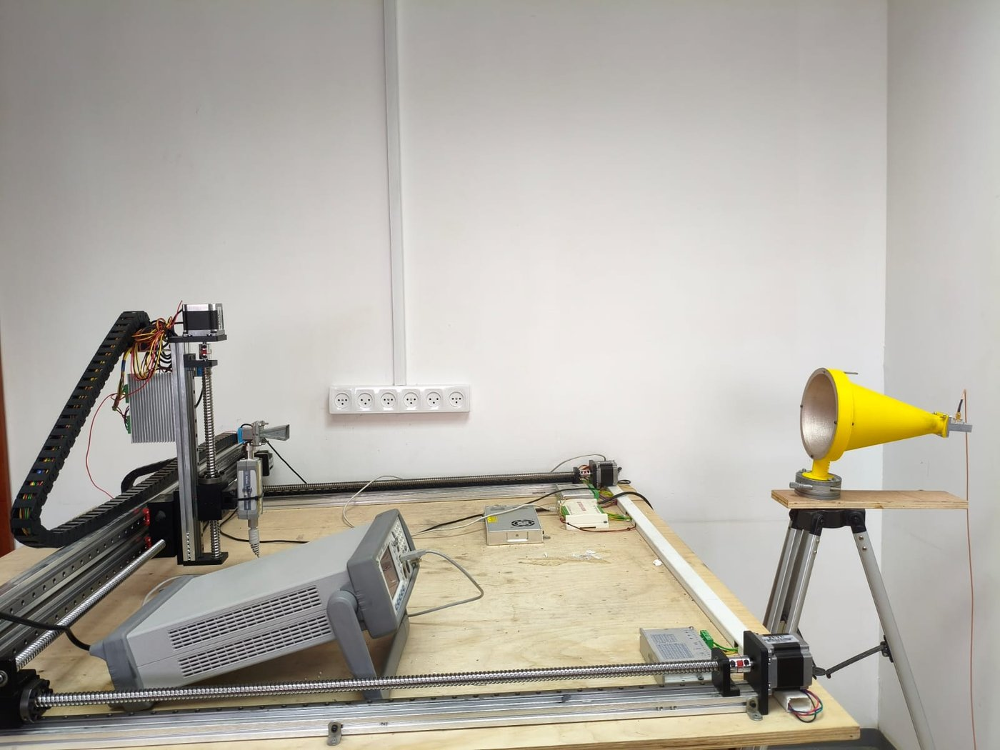

מגנטיות יישומית · מערכות מגנטים
מגנטיות יישומית ואונדולטורים ממגנטים קבועים
איכותם של אונדולטור ומערכת מגנטים נקבעת על פי איכות השדה שלהם. כראש המעבדה למערכות מגנטיות יישומיות באוניברסיטת אריאל, אני מתכנן אונדולטורים סליליים ממגנטים קבועים (NdFeB) ומכלולי מגנטים, מחשב את השדה בסימולציה מגנטוסטטית ומאמת מול מדידה.
מה המידול מספק
עבור גאומטריית מגנטים מוצעת, סלילים, מקטעי טבעת או מערכי הלבך, המודל מחשב את השדה התלת־ממדי, את המשרעת על הציר ואת ההרמוניות המרחביות שלה, ואת הכוחות והמומנטים על המכלול. סריקות פרמטריות מכמתות את רגישות השדה לגאומטריה ולסבולות ייצור, תנאי הכרחי לתכנון בר־ייצור. העבודה משמשת לפיתוח אונדולטורים קומפקטיים למקורות קרינה ולהאצת IFEL, בין השאר במסגרת שיתוף פעולה תעשייתי בינלאומי לייצור אונדולטורים.
מיפוי שדה מגנטי
במעבדה אני ממפה את השדה של מכלולי מגנטים בגאוסמטר המותקן על מערכת מיפוי תלת־צירית (XYZ), שמזיזה את הגשש בשלושה צירים סביב המכלול. המפות הנמדדות מושוות לסימולציה המגנטוסטטית של אותה גאומטריה.

מחקר יישומי ויכולות טכניות
- מידול מגנטוסטטי תלת־ממדי
- תכנון מערכי מגנטים קבועים ומערכי הלבך
- ניתוח הרמוניות שדה, כוחות ומומנטים
- בחינת סבולות ייצור וישימות הנדסית
- השוואה בין סימולציה למדידה
לשאלות טכניות ולשיתופי פעולה מחקריים: nezahb@ariel.ac.il